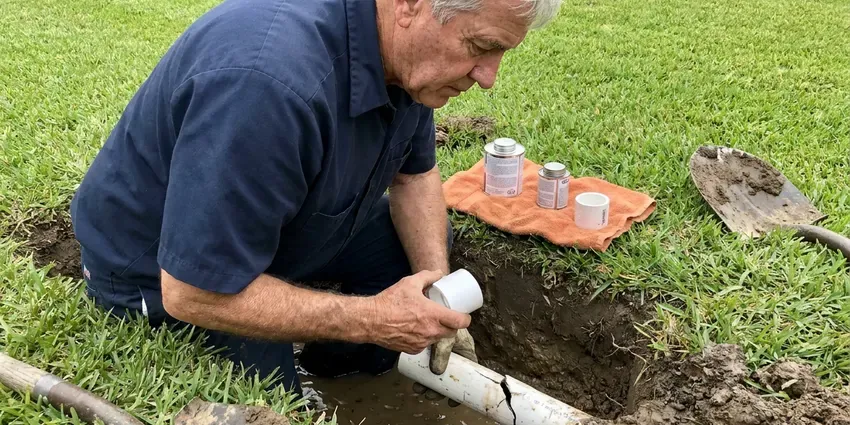

Polybutylene Plumbing Replacement in Tea, SD
Polybutylene replacement in Tea, SD with drywall patching, permits and testing included in one price.
- PEX-A and Copper Options
- Permits and Inspection Included
- Licensed, Insured Plumbers
- Fast Free Poly Pipe Inspections

Get Polybutylene Out of Your Walls in Tea, SD
One planned repipe costs far less than a sudden burst and a water damage claim.
Code-Compliant Polybutylene Plumbing Replacement and Repiping in Tea, SD
Replacing polybutylene is a repipe, not a repair. We cut small openings, run new PEX-A or copper from the main shutoff to every fixture and appliance, then patch the walls. You will have water most nights. Most houses are done in two to four working days, with one more day for the drywall finish.
Some of what we do:
- Full home replacement with PEX or copper
- Permits under South Dakota plumbing code
- Complete attic-routed PEX-A or Type L copper replacement systems

Additional Plumbing Maintenance Services in Tea, SD
Our maintenance and specialty plumbing services in Tea, SD catch small problems before they become emergencies.


Customers
Why Choose HWR Plumbing for Polybutylene Plumbing Replacement in Tea, SD?
Repipes are weekly work for our crews, and they know exactly where poly lines hide. We give you a fixed price and a clear timeline before work begins.
- Poly Experts, We identify polybutylene at a glance and know every place it tends to fail.
- Quality Materials, We install Type L copper or Uponor PEX-A with matching fittings.
- Accurate Assessment, We check every visible line and fitting to confirm polybutylene before quoting.
Citywide Coverage
Wherever your home is in Tea, an estimator can usually be there within a few days. The visit is free. In about an hour we check the heater, main and fixtures, look at the attic and give you a written price.
Experienced Team
Each crew includes repipe plumbers and drywall finishers who work together. That keeps the job moving. You are not waiting on a separate drywall contractor after the plumbing passes inspection, because the same crew patches and textures the openings the next day.
Safety-First Approach
We install new shutoff valves, support pipe properly in attics and protect lines from nails with metal plates. Bonding gets checked too. If removed metal pipe was part of the electrical ground, we flag it so the bond can be restored.
Trusted Certified Tea Plumbing Services Professionals
At HWR Plumbing, we take pride in licensed, certified plumbing services throughout Tea, SD. Those papers on the wall mean something. Our plumbers hold recognized industry credentials, and they follow strict safety and quality rules on every repair, installation and maintenance call we run.
Call Us Now PHCC Plumbing Contractor Recognition
PHCC Plumbing Contractor Recognition Better Business Bureau (BBB) Accreditation
Better Business Bureau (BBB) Accreditation Angi Certified Pro
Angi Certified Pro ISO 9001 Quality Management Certification
ISO 9001 Quality Management CertificationComplete Polybutylene Plumbing Replacement in Tea, SD
Polybutylene Identification and Inspection in Tea
Polybutylene is usually gray, though it can be white, blue or black, and is often stamped PB2110. Check the heater first. You may also see it under sinks, near the main shutoff or coming through the garage wall, and we trace runs through the attic to confirm how much of the house it serves.

Permits for Polybutylene Replacement in Tea
A whole-house poly replacement in Tea is a repipe, and it usually needs a plumbing permit. The permit is on us. Rough-in inspection happens with walls open, so the inspector can see supports, nail plates, valves and the test gauge. A permit on file also helps with insurers and buyers.
Emergency Polybutylene Burst Repair in Tea
Poly fittings tend to let go during sharp temperature swings, when the pipe expands and contracts more than usual. Frozen pipes are a real and regular risk in South Dakota, with deep frost each winter that can reach water service lines buried at shallow depth. If a line bursts in your house, close the main shutoff, then call us so we can stop the leak, make a temporary repair and restore water. A full replacement comes next. Waiting for the next burst is the most expensive way to deal with polybutylene.
Whole-Home PEX Replacement in Tea, SD
PEX-A is the most common replacement for polybutylene because it is flexible, scale resistant and easy to route. Our crews use Uponor PEX-A and full-bore fittings. Every fixture, appliance and the water heater gets new pipe from the main, and most houses are finished in two to four days with water on each evening.
Affordable Polybutylene Solutions in Tea, SD
Poly replacement is a big expense, so we give you options instead of a single take-it-or-leave-it number. PEX-A usually costs less than copper. Interior and yard service work can be priced separately, letting you do the inside now and the yard line later.
Why Polybutylene Fails in Tea
Polybutylene reacts with oxidizers like chlorine that water utilities use to disinfect tap water. Over the years, the pipe and its acetal fittings get brittle from the inside, then crack along the inner wall until one splits under normal pressure. Mineral scale builds up quickly in water heaters, faucet aerators and fixtures here, so a softening system is a common upgrade for homeowners. Heat makes it worse. Most of the failures we see are on hot lines and at fittings close to the heater.
Fitting Failure and Emergency Repair in Tea
Acetal plastic and copper crimp ring fittings are often the first part of a poly system to fail. Attic fittings fail hard. After an emergency repair we schedule the full replacement, since removing the poly system is the only lasting fix.

Polybutylene Replacement Costs in Tea, SD
Replacing polybutylene with PEX in an average home often costs $5,000 to $12,000, depending on size and bathrooms. Copper runs higher. Adding a yard service line replacement often adds $1,500 to $4,000, and compared to repairing water damage from a burst, a planned replacement is usually the better use of the money.
Polybutylene Plumbing Replacement Near Me in Tea, SD
Our crews know the housing tracts in Tea where polybutylene was used most. Routes come together fast. Knowing how those houses are framed and piped means fewer wall openings, shorter runs and a cleaner job from start to finish.
If you are searching for polybutylene replacement near me, HWR Plumbing offers free inspections throughout Tea. You get a clear answer on the pipe, your options and a written price.
HWR Plumbing at a Glance
- Licensed and insured plumbers serving Tea, SD
- Same-day appointments and 24/7 emergency response
- Upfront, flat-rate pricing before work begins
- 4.8-star rated by 304+ South Dakota customers
Tea Map
Tea Information
- Population
- 7,381
- Area codes
- Local
- Service area
- Tea and towns within a 40 mile drive
- Nearby
- Harrisburg, Sioux Falls, Brandon, Madison
Polybutylene in Tea, SD breaks down from the inside as it ages, and the first sign is usually a failed fitting, not a slow drip.
Expert Services
Call HWR Plumbing for reliable plumbing work done by licensed pros in Tea, SD.
Our Specialized Plumbing Services in Tea, SD
At HWR Plumbing, we handle the full list of plumbing services across Tea, SD. From leak detection to full system installs, our team works fast and charges fair prices on homes and commercial properties alike. Here are the core services we offer:


From Poly Pipe to New Plumbing in Tea, SD
Polybutylene replacement in Tea, SD runs on a clear schedule so you know what to expect.
Free Inspection
Call (605) 480-9736 to schedule a free polybutylene inspection. We confirm the pipe type and give you a written replacement price.
Replace and Test
Our crew installs new PEX or copper lines to every fixture and tests at full pressure. Water is restored at the end of most work days.
Patch and Document
We patch and texture the openings and pass the final inspection. You receive photos, permits and warranty documents for your files.
Frequently Asked Questions About Polybutylene Plumbing Replacement in Tea
Most PEX replacements of polybutylene cost $5,000 to $12,000 for an average home. Copper runs higher, and a yard line usually adds $1,500 to $4,000.
Gray or blue plastic pipe stamped PB2110 is the main sign. Leaks at fittings are another. Poly often looks fine right up until it fails, so if your home was built between about 1978 and 1995 and has this pipe, replacement is recommended even without a leak yet.
There will be some noise and a few small openings in walls. We limit the mess. Our crews cover furniture, protect floors and clean up thoroughly each day, and we work through the house in sections so most rooms stay usable while we are there.
Usually, yes, since it is a whole-house repipe. We handle the permit. We file it, book the inspection with walls open and close it out at the end, which puts the job on record with the building department.
Most homes take two to four days for plumbing, plus a day for drywall patching. You will have water most nights.
Replacing an entire supply system requires routing, pressure testing and permits. A licensed crew finishes faster and provides warranties and documentation.
In most cases, yes, a plumbing permit is required for full repiping in Tea. We take care of it. That includes the application, the rough-in inspection with the walls open and the final sign-off, so you do not have to deal with the paperwork or the scheduling.
Mineral scale builds up quickly in water heaters, faucet aerators and fixtures here, so a water softener is a common upgrade for homeowners. Hard water does not cause poly to fail the way chlorine does. It adds scale. Mineral scale cuts flow and adds strain to brittle pipe, which is why a softener loop during the repipe can make sense in hard water.
Hear From Customers Who Hired Our Plumbing Experts

Carlos V.
Our house still had galvanized pipe, and upstairs the shower was a trickle. The crew repiped everything in PEX over three days and patched every drywall hole before they left. The pressure difference is night and day.
Repiping · Yankton, SDNathan E.
Our tankless heater kept throwing an error code and shutting off mid shower. The tech flushed the heat exchanger, which was full of scale, and replaced a bad flow sensor. Hot water has been steady for half a year now.
Water Heater Repair · Brandon, SD
Paul B.
Our pit pump ran nonstop even in dry weather. The plumber found the check valve was stuck open, so the same water kept cycling back into the pit. New valve, new float switch, done in an hour. It runs quiet now.
Sump Pump · Harrisburg, SDGreg S.
I manage a small strip center with six tenants. HWR Plumbing handles our annual backflow testing and fixed a recurring clog in the shared sewer line that had been backing into the nail salon. Their reports come in clean and on time.
Commercial Plumbing · Brandon, SD
Lisa C.
Water was pouring out from under the washing machine on a holiday weekend. HWR Plumbing talked me through closing the valves over the phone and had a plumber at the house within ninety minutes. It was a burst fill hose.
Emergency Plumbing · Harrisburg, SD
Patricia H.
We had a slab leak that two other companies could not find. HWR Plumbing located it in under an hour with a listening device. They rerouted the line through the attic instead of breaking up the floor, so we kept our kitchen tile.
Slab Leak Repair · Madison, SD